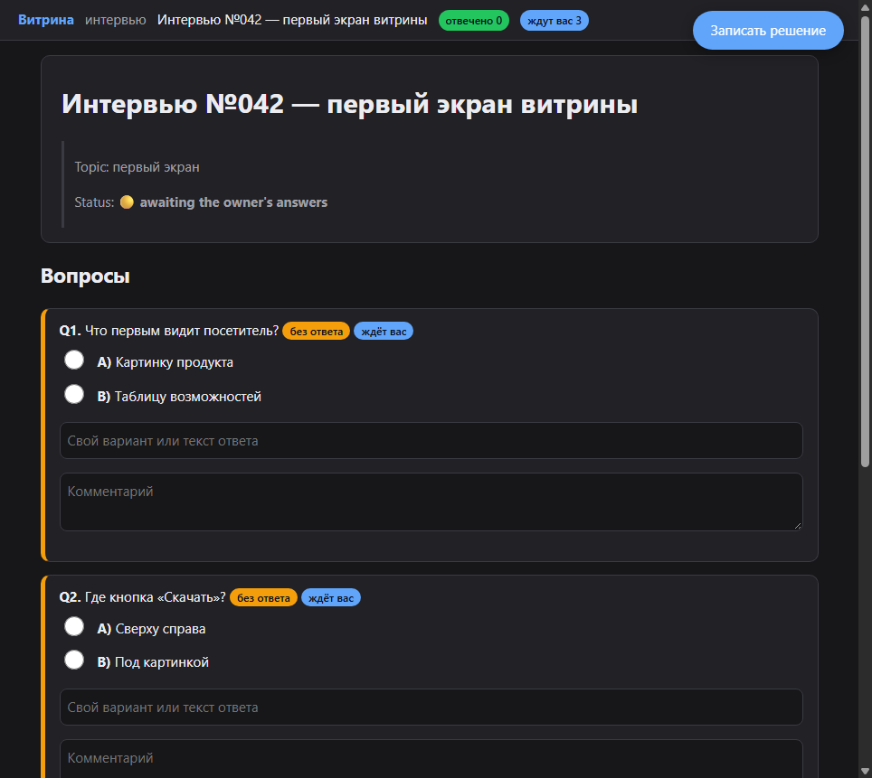
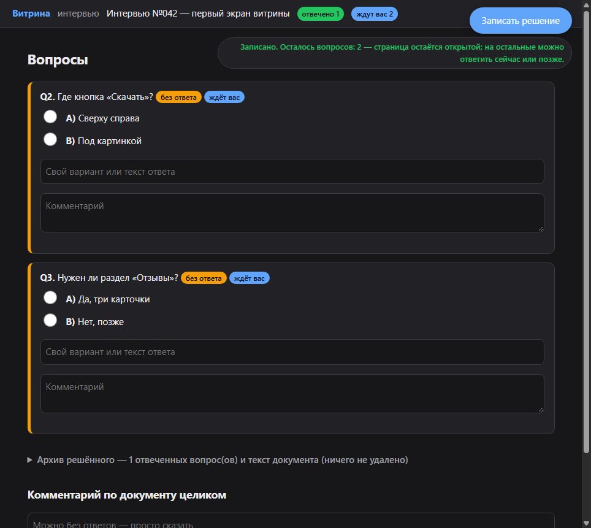
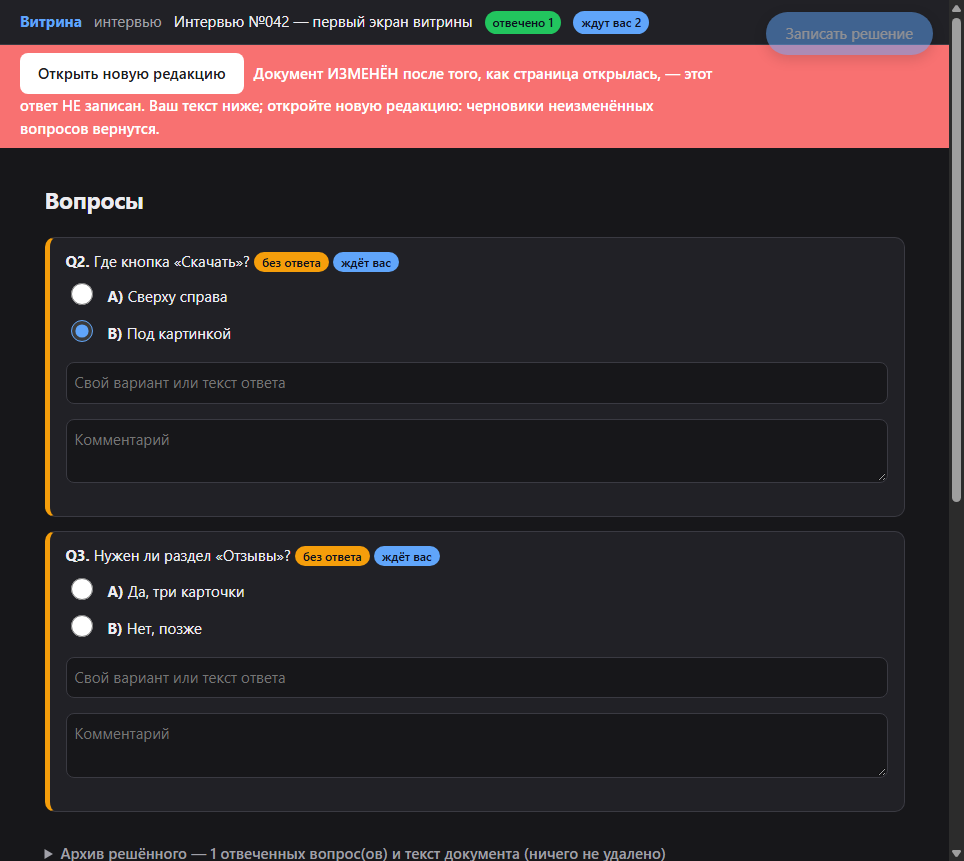

1. Что вы видите, когда ответили на один вопрос из трёх сделано в 2.8
Сравнение: до записи и после


- Ситуация
- На странице три вопроса; вы знаете ответ только на первый.
- Действие
- Вы выбираете вариант и нажимаете «Записать решение».
- Результат
- Страница остаётся открытой и пишет «Записано. Осталось вопросов: 2»; первый вопрос свёрнут в архив решённого, черновики остальных на месте; агент узнаёт об ответе сразу.
- Проверка
- Свод полигона s22, раздел D (7): «Осталось вопросов: 2», процесс жив, сторож завершился кодом 0.
2. Агент переписал документ, а у вас открыта старая вкладка сделано в 2.8
Порядок во времени
Развилка исходов
Что происходит с вашим ответом, записанным из старой вкладки
а) Как было до 2.8вы видите «Записано», окно закрылось
сервер вписал ответ в новый текст по номеру вопроса — мог сесть не на тот вопрос
вердикт баг (так случилось в соседнем полевом проекте)
сервер вписал ответ в новый текст по номеру вопроса — мог сесть не на тот вопрос
вердикт баг (так случилось в соседнем полевом проекте)
б) 2.8: вопрос переписанвы видите красная полоса «Документ ИЗМЕНЁН», ваш текст ниже, кнопка «Открыть новую редакцию»
сервер ничего не записал
вердикт всё верно
сервер ничего не записал
вердикт всё верно
в) 2.8: ваш вопрос не менялсявы видите после «Открыть новую редакцию» ваш черновик на том же вопросе
сервер примет запись новой редакции
вердикт всё верно
сервер примет запись новой редакции
вердикт всё верно

- Ситуация
- У вас открыта страница интервью; агент тем временем переписал второй вопрос.
- Действие
- Вы выбираете ответ на второй вопрос и нажимаете «Записать решение».
- Результат
- Полоса «Документ ИЗМЕНЁН …», ваш текст остаётся на странице, ответ не записан ни в документ, ни в решение; «Открыть новую редакцию» возвращает черновики неизменённых вопросов.
- Проверка
- Свод полигона s22, раздел D (7): запись старой вкладки — 409, в документе второго ответа нет, кнопка не перекрыта.